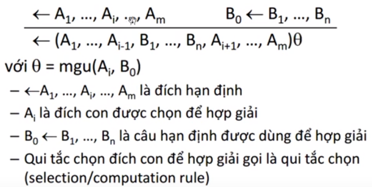
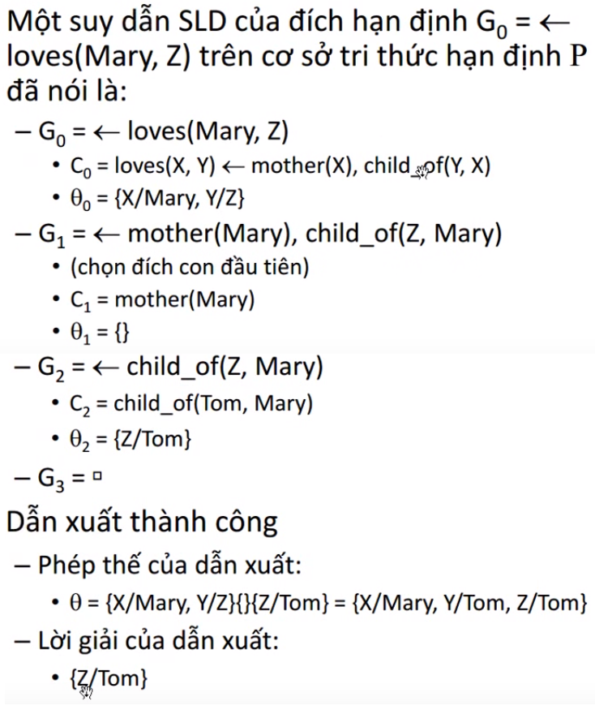

Về trang chủ
Hợp giải SLD, Cây SLD, Hệ suy diễn Prolog
I. Hợp giải SLD
- Luật suy diễn cho truy vấn hạn định trên cơ sở tri thức hạn định
- Phản chứng bằng việc đưa ra phản ví dụ
- Là sự hòa quyện của:
+ Đặc biệt hóa và đổi tên biến (đồng nhất)
+ Phản đảo và Modus Pones (Modus Tollens)
. Suy diễn lùi(backward chaining)
+ GIới thiệu hội
- Là trường hợp đặc biệt của hợp giải Robinson: Linear resolution for Definite clauses with Selection function
- Luật:

II. Dẫn xuất SLD (SLD - derivation)
- Cho P là 1 cơ sở tri thức hạn định, R là qui tắt chọn, G0 là 1 đích hạn định. Dẫn xuất hạn định của G0 (trên P, dùng R) là dãy:
G0 ==> G1 ==> ... ==> Gn
với Gi+1 là kết quả hợp giải của Gi với 1 câu Ci trong P, dùng 1 đích con A của Gi bằng qui tắc chọn R với đồng nhất tử là Φi nếu:
- n = ∞, gọi là dẫn xuất vô hạn
- Gn = ◻, gọi là dẫn xuất thành công
- n < ∞, Gn ≠ ◻ và Gn không hợp giải được nữa, gọi là dẫn xuất thất bại
- Phép thế kế hợpΦ = Φ0Φ1 ... Φn-1 , được gọi là phép thế của dẫn xuất
+ Nếu n = 0 thì Φ = {}
- Phép thế của 1 dẫn xuất thành công mà chỉ hạn chế trên các biến của G0 thì gọi là lời giải của dẫn xuất
- Ví dụ:

II. Hệ suy diễn Prolog
- Hệ suy diễn Prolog dùng thuật hợp giải SLD
- Qui tắt chọn của Prolog là đích con trái nhất
- Prolog dùng chiến thuật tìm kiếm sâu trên cây có quay lui để tìm tất cả các dẫn xuất SLD thành công
+ Prolog không là hệ suy diễn "đủ tuyệt đối"
- Mặc định, phép đồng nhất của prolog không kiểm "occurs check"
+ Prolog không là hệ suy diễn "đúng tuyệt đối"
- Ở các bài kế tiếp chúng ta sẽ làm về phần ngôn ngữ lập trình Prolog nha. Lý thuyết đến đây đủ rồi